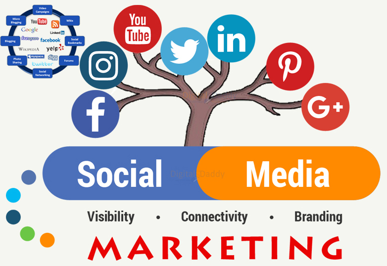

Website Bulider

Welcome to my Social Media Management Service!
social media management is most important service for each company. I provide organic marketing management for your online business. Social Media is no more a choice for a Business in this “Digital Era” we live in. Do you know that 93% of Pinterest users use this platform to plan purchases? Yes, the importance of online management is obvious.As a Social Media Manager, I have helped hundreds of businesses to expose themselves and their services to a bigger audience, converting mostly into buyers. -What I can do for you: Implementation of Social Media Marketing Strategies on: Facebook ,Instagram,Twitter,Pinterest, Linkedin,Youtube Channel,Google Plus Business,Optimization of Business Pages on all sites
If you need to run your business in this era, you will have to be on Facebook, Instagram, Twitter, LinkedIn, Pinterest and other Social media platforms which everyone knows. You might not have enough idea or time to reach your audiences through Social Media. I can help you to promote and to reach your targeted audiences with your Social Media Accounts. I have a very experience and expert team who are master at their work.
Implementation of Social Media Marketing Strategies on:
Facebook ,Instagram,Twitter,Pinterest ,Linkedin,Youtube Channel ,Google Plus BusinessLet Us Manage, Optimize, and Grow Your Social Media Presence. Engage your community. Build an audience. Increase your revenue. It's all possible with our social media services packages.
SERVICES:
Social media strategy,Develop Content ,Growth Optimization and Daily Maintenance, Communication,Content development,Develop Brand Awareness,Build Relationships (Engagement),Implementation guidelines Competitive analysis Profile signups and setups (Cover, Profile main image/logo, VA settings, Story development and about section) Blog design, setup and/or optimization (Gig extra),Blog strategy development (Gig extra),Community building,Community monitoring and more (Will send more details in conversation with you).
I will offer you the following services:
optimize your social media accounts ,create high-quality posts ,schedule daily posts,promoting your services,Research of trending hashtags,Engage followers